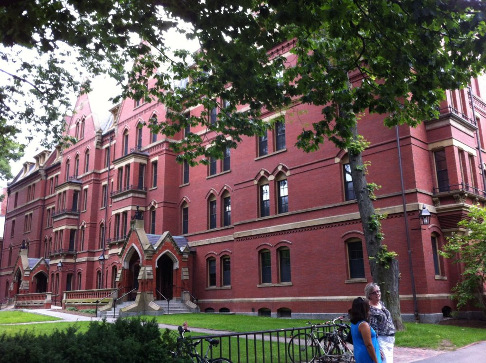

1.4 Mudança e continuidade



Na era da conectividade constante e das mídias sociais, é hora de os muros monolíticos milenares cobertos de hera passarem por uma mudança de fase, transformando-se em algo muito mais leve, permeável e fluido.
Anya Kamenetz, 2010
Embora este livro seja destinado a professores e docentes em escolas, faculdades e universidades, quero analisar especialmente como a era digital está impactando as universidades. Há uma crença amplamente difundida — mesmo entre aqueles que se beneficiaram de excelentes diplomas em universidades prestigiosas — de que as universidades estão desconectadas da realidade, que a liberdade acadêmica é, na verdade, uma forma de proteger professores em uma carreira confortável que não os obriga a mudar, e que toda a organização da academia seria melhor deixada ao seu passado medieval: em outras palavras, as universidades são um artefato do passado e algo novo precisa substituí-las.
No entanto, há boas razões pelas quais as universidades existem há mais de 800 anos e provavelmente continuarão relevantes por muito tempo. As universidades são deliberadamente concebidas para resistir à pressão externa. Já viram reis e papas, governos e corporações empresariais vir e ir, sem que nenhuma dessas forças externas tenha alterado fundamentalmente a natureza da instituição. As universidades se orgulham de sua independência, de sua liberdade e de sua contribuição para a sociedade. Comecemos, então, por analisar muito brevemente esses valores fundamentais, porque qualquer mudança que realmente ameace esses valores tende a ser fortemente resistida pelos professores e docentes dentro da instituição.
As universidades tratam fundamentalmente da criação, avaliação, manutenção e disseminação do conhecimento. Esse papel na sociedade é ainda mais importante hoje do que no passado. Para que as universidades desempenhem adequadamente esse papel, porém, certas condições são necessárias. Primeiro, elas precisam de um grau considerável de autonomia. O valor potencial do novo conhecimento em particular é difícil de prever com antecedência. As universidades oferecem à sociedade uma forma segura de apostar no futuro, incentivando pesquisas e desenvolvimentos inovadores que podem não ter benefícios aparentes de curto prazo imediatos, ou que podem não levar a lugar algum, sem incorrer em grandes perdas comerciais ou sociais. Outro papel fundamental é a capacidade de questionar as premissas ou posições de agências poderosas fora da universidade, como governo ou indústria, quando estas parecem estar em conflito com evidências, princípios éticos ou o bem geral da sociedade.
Talvez ainda mais importante, há certos princípios que distinguem o conhecimento acadêmico do conhecimento cotidiano, como regras de lógica e raciocínio, a capacidade de transitar entre o abstrato e o concreto, ideias apoiadas por evidências empíricas ou validação externa (ver, por exemplo, Laurillard, 2001). Esperamos que nossas universidades operem em um nível de pensamento superior ao que nós, como indivíduos ou corporações, conseguimos em nosso cotidiano.
Um dos valores fundamentais que tem ajudado a sustentar as universidades é a liberdade acadêmica. Acadêmicos que fazem perguntas inconvenientes, que questionam o status quo, que apresentam evidências que contradizem afirmações feitas por governos ou corporações, são protegidos de demissão ou punição dentro da instituição por expressarem tais pontos de vista. A liberdade acadêmica é uma condição essencial em uma sociedade livre. No entanto, ela também significa que os acadêmicos são livres para escolher o que estudam e, mais importante para este livro, como melhor comunicar esse conhecimento. O ensino universitário, portanto, está intrinsecamente ligado a essa noção de liberdade acadêmica e autonomia, mesmo que algumas das condições que protegem essa autonomia, como a estabilidade no emprego ou o emprego vitalício, estejam cada vez mais sob pressão.
Faço este ponto por uma única razão. Se as universidades vão mudar para atender às pressões externas em mutação, essa mudança deve vir de dentro da organização, e em particular dos próprios professores e docentes. São os docentes que devem perceber a necessidade de mudança e estar dispostos a fazê-la eles próprios. Se o governo ou a sociedade como um todo tentar impor mudanças de fora, especialmente de uma forma que questione os valores fundamentais de uma universidade, como a liberdade acadêmica, há um sério risco de que justamente aquilo que torna as universidades um componente único e valioso da sociedade seja destruído, tornando-as menos, e não mais, valiosas para a sociedade como um todo. No entanto, este livro fornecerá muitas razões pelas quais também é do interesse não apenas dos aprendizes, mas dos próprios docentes, fazer mudanças, em termos de gestão da carga de trabalho e atração de recursos adicionais para apoiar o ensino.
As escolas e os cursos superiores de dois anos estão em uma posição um pouco diferente. É mais fácil (embora não tão fácil) impor mudanças de cima para baixo ou por meio de forças externas à instituição, como o governo. No entanto, como a literatura sobre gestão de mudanças indica claramente (ver, por exemplo, Weiner, 2009), a mudança ocorre de forma mais consistente e profunda quando aqueles que passam pela mudança compreendem a necessidade dela e têm o desejo de mudar. Assim, em muitos aspectos, escolas, cursos superiores de dois anos e universidades enfrentam o mesmo desafio: como mudar enquanto se preserva a integridade da instituição e o que ela representa.
Atividade 1.4 Mudança e continuidade
1. Você acha que as universidades são irrelevantes hoje? Se não, quais são as alternativas para desenvolver aprendizes com o conhecimento e as competências necessários na era digital?
2. Quais são suas opiniões sobre os valores fundamentais de uma universidade? Em que diferem dos aqui apresentados?
3. Você acha que escolas, faculdades e/ou universidades precisam mudar a forma como ensinam? Se sim, por quê e de que forma? Como isso poderia ser feito da melhor maneira sem interferir na liberdade acadêmica ou em outros valores centrais das instituições de ensino?
Não há respostas certas ou erradas para essas perguntas, mas você pode querer retornar às suas respostas após ler todo o capítulo.
Referências
Kamenetz, A. (2010) DIY U: Edupunks, Edupreneurs, and the Coming Transformation of Higher Education White River Junction VT: Chelsea Green
Laurillard, D. (2001) Rethinking University Teaching: A Conversational Framework for the Effective Use of Learning Technologies New York/London: Routledge
Weiner, B. (2009) A theory of organizational readiness for change Implementation Science, Vol. 4, No. 67